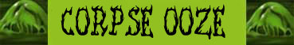

Rilasciare le Anime dei Morti;
Schivata;
Immunità all'Energia Negativa;
Immunità all'Acido;

|
|
Ambiente/Habitat | Cripte, Zone Cimiteriali, Fosse Comuni |
| Frequenza | Rare | |
| Organizzazione | Solitario | |
| Periodo di Attività | Qualsiasi | |
| Dieta | Carnivora | |
| Intelligenza | Non Intelligent (0) | |
| Punti Combattimento | Nessuno | |
| Tesoro | Occasionale | |
| Allineamento Dominante | Neutrale | |
| Numero di Apparizione | 1 | |
| Classe Armatura | 3 [10 base, 3 corazza, 4 destrezza] | |
| Movimento | 8 esagoni | |
| Dadi Vita | 8 | |
| Thac0 | 14 | |
| Numero di Attacchi | Tentacolo | |
| Danni | 1d6 (botta) + 6 (Acido) | |
| Poteri Offensivi | Assorbire Energia Vitale; Rilasciare le Anime dei Morti; |
|
| Poteri Difensivi | Corpo di Acido Liquido; Schivata; Immunità all'Energia Negativa; Immunità all'Acido; |
|
| Poteri Generici | Nessuno; | |
| Vulnerabilità | Nessuna; | |
| Resistenza alla Magia | Nessuna | |
| Sensi | Senso Primordiale (30 metri) | |
| Dimensioni | Large (2,50 m.) | |
| Morale | Fearless (20) | |
| Valore in Punti Esperienza | 2400 |
|
TIRI SALVEZZA DELLA CREATURA [8 DV] |
|||||||
| CORAGGIO | ENERGIA VITALE | MAGIA | MALATTIA | MENTE | RIFLESSI | ROBUSTEZZA | VELENO |
| 0 | 0 | 0 | Immune | 0 | +10% | -5% | Immune |
| 42 | 47 | 57 | 41 | 55 | 39 | 49 | 38 |
Descrizione
Un contorto ammasso di melma verde e nerastra si ritorce come animata da una forza innaturale spostandosi con lunghi balzi e rapidi prolungamenti corporali. All'interno della melma che compone il corpo della creatura possono osservarsi pezzi di cadaveri di umanoidi, in particolare frammenti ossei in stato di avanzata decomposizione che si protendono in tutte le direzioni ad ogni movimento dell'essere. La massa della creatura si sviluppa per una lunghezza di circa 2 metri e mezzo.
Combat
Questa creatura combatte attaccando le vittime in corpo a corpo. Se circondato da più avversari cerca di terrorizzarne prima il maggior numero per poi dedicarsi ad eliminarli uno alla volta. Appena subisce un certo numero di ferite la creatura prova a curarsi assorbendo l'energia vitale delle proprie vittime.
ASSORBIRE ENERGIA VITALE (Powerful Special Ability): La creatura può, effettuando un'azione complessa avente fattore iniziativa pari a +4 che non richiede il mantenimento della concentrazione, assorbire l'energia vitale dalle creature presenti entro 9 metri di distanza che abbiano un corpo organico basato sull'energia positiva. Queste creature subiranno 1d6 danni da energia negativa e la creatura si curerà di un pari ammontare di punti ferita in precedenza persi. Una volta utilizzato questo potere speciale, la creatura non potrà utilizzarlo nuovamente nei successivi quattro round di combattimento.
RILASCIARE LE ANIME DEI MORTI (Superior Special Ability): La creatura può, effettuando un'azione complessa avente fattore iniziativa pari a +5 che non richiede il mantenimento della concentrazione, rilasciare le anime dei morti dei cadaveri di cui il suo corpo è composto. Quando ciò avviene delle entità spettrali fuoriescono dalla creatura dirigendosi in tutte le direzioni e raggiungendo le creature presenti (anche se non visibili od in altro modo nascoste) entro 15 metri di distanza dalla creatura. Orbene, quando ciò avviene, tutte le creature non immuni alla paura dovranno superare immediatamente un tiro salvezza su coraggio (al quale si applica il modificatore dovuto alla differenza di livello con la creatura). Chi fallisce il tiro salvezza diviene terrorizzato dalla paura, sarà costretto a restare tremante ed immobile al suo posto senza poter compiere alcuna azione per 10 round. La vittima, però, non subirà alcuna penalità alla propria classe armatura ed ai propri tiri salvezza in quanto costei potrà continuare a difendersi passivamente. Qualora, prima dello scadere dei 6 round, la vittima subirà un qualsiasi attacco diretto (od altra forma di azione ostile direttamente lesiva e dannosa) gli effetti del potere speciale termineranno alla fine del round in corso. In tale ultimo caso, dunque, la creatura sarà libera di agire a partire dal round successivo a quello in cui è stata attaccata subendo, però, una penalità di -2 ai suoi tiri per colpire per tutto il resto della durata dell'effetto del potere. La creatura può usare questo potere una sola volta ogni 24 ore.
CORPO DI ACIDO LIQUIDO (Superior Special Ability): Il corpo della creatura è composto da acido allo stato liquido che danneggia i tessuti organici al contatto. Per tale motivo ogni volta che chi attacca la creatura in corpo a corpo la colpisce con un attacco costui può essere colpito dagli schizzi di tale composizione acida. Per evitare lo schizzo la vittima deve superare un tiro salvezza su riflessi al quale sarà applicata una penalità di -1% per ogni danno effettivamente causato alla creatura con l'attacco in questione. Se il tiro salvezza fallisce la vittima subirà 2d4 danni da acido.
SCHIVATA (Lesser Special Ability): La creatura è particolarmente agile. Una volta al round, infatti, la stessa potrà provare a schivare un qualsiasi attacco ricevuto in corpo a corpo da una posizione frontale che non sia di dimensioni superiori a large. La creatura ha il 20% di riuscire a schivare il colpo in arrivo. Questo tiro percentuale va effettuato prima del tiro per colpire effettuato dall'avversario. Se l'avversario effettua un 20 naturale sull'attacco che la creatura era riuscita a schivare lo stesso andrà comunque a segno ma senza conseguenze critiche. Al tiro percentuale andranno applicate le penalità previste per il mantenimento della concentrazione in situazioni di combattimento particolari (come ad esempio incapacitato). La creatura non potrà provare a schivare in alcun caso attacchi a distanza.
IMMUNITA' ALL'ENERGIA NEGATIVA (Typical Ability): Il corpo della creatura è completamente resistente ai danni da energia negativa ed alle lesioni alla propria energia vitale, per tale motivo la stessa non subirà alcun danno da energia negativa sia esso di origine magica che naturale.
IMMUNITA' ALL'ACIDO (Typical Ability): Il corpo della creatura è completamente resistente ai danni da acido, per tale motivo la stessa non subirà alcun danno da acido sia esso di origine magica che naturale.
Habitat/Society
A differenza di altre creature, anche melmoidi, il Corpse Ooze non è il risultato di un procedimento di procreazione. Questi esseri si sviluppano spontaneamente nei luoghi in cui sono presenti contemporaneamente cadaveri in decomposizione ed una qualche fonte di energia negativa. Questa creatura utilizza i cadaveri delle proprie vittime come parte del suo corpo assorbendone risucchiandone lo spirito (i cadaveri all'interno della creatura non possono essere animati come non morti). Sembra che questa creatura si nutri proprio dell'energia spirituale dei corpi che lentamente assorbe. Queste creature tendono a restare nelle zone cimiteriali o negli altri luoghi di sepoltura dove possono trovare più corpi da assorbire.
Ecology
Il Corpse Ooze è una creatura che si forma nelle zone dove sono presenti cadaveri in decomposizione. Principalmente fosse comune, cripte od anche cimiteri a cielo aperto come ad esempio zone di battaglia. Questa creatura nonostante abbia alcune caratteristiche tipiche dei non morti può comunque considerarsi un ibrido appartenente alla categoria dei melmoidi al quale non possono applicarsi gli altri caratteri dei non morti. Non è possibile, inoltre, scacciare o dominare queste creature come se fossero non morti né danneggiarle utilizzando fonti di energia positiva (che possono regolarmente curarli). In quanto riescono a schermare totalmente la loro energia vitale positiva, queste creature possono convivere con i non morti che non avvertono l'esigenza di terminare la loro esistenza.
Mystical Resource Sourge
(Protoplasma) Quantità:
1, Presenza 33% - Effetto Particolare:
Acido
- Qualità della Risorsa:
Common.
Mystical Resource Sourge
(Pezzi di Cadavere) Quantità:
1, Presenza 25% - Scuola di Magia:
Necromancy
- Qualità della Risorsa:
Common.